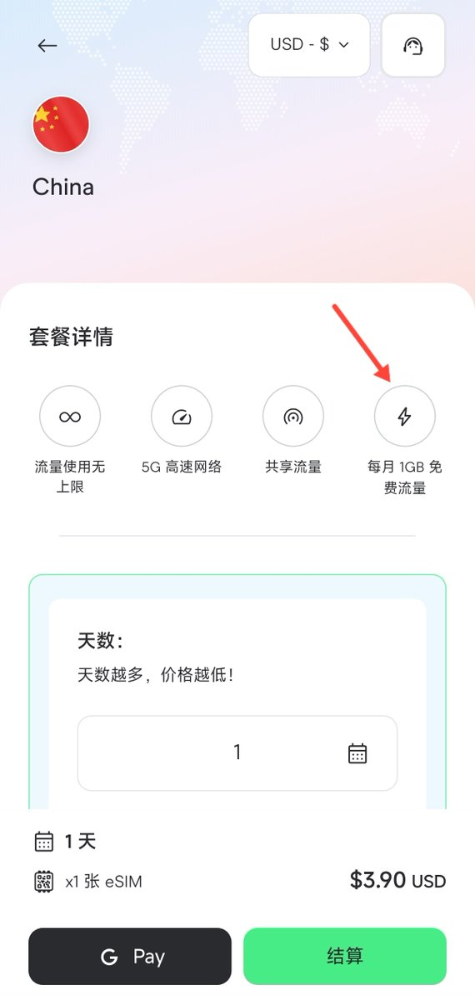
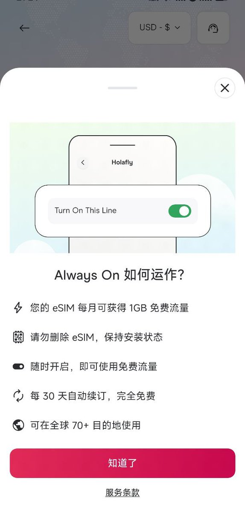
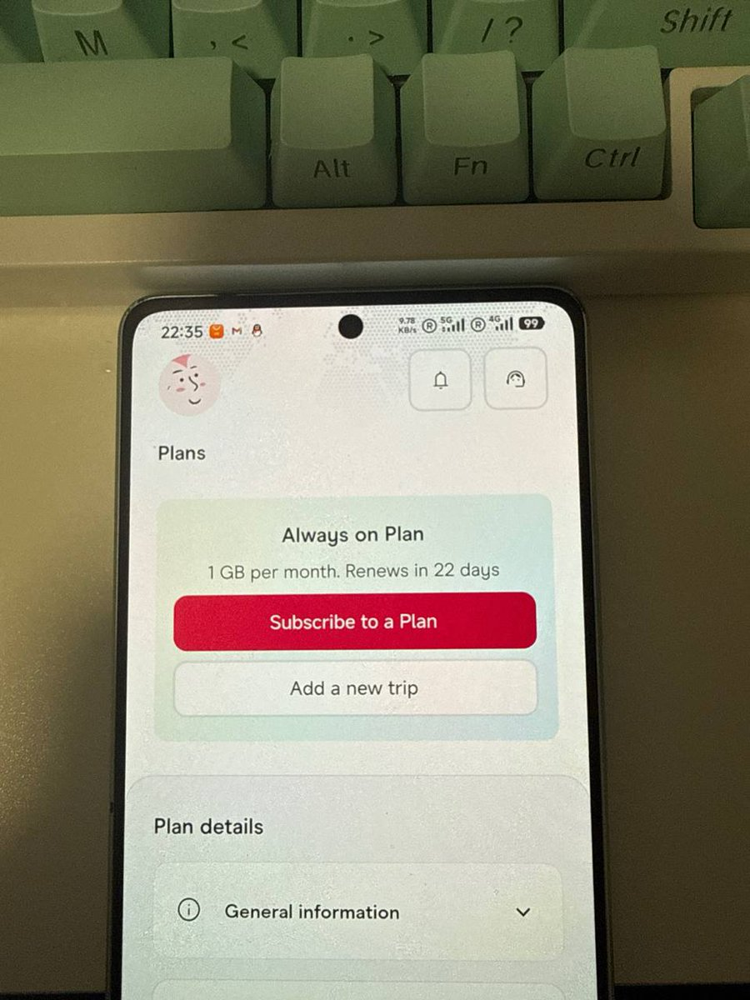
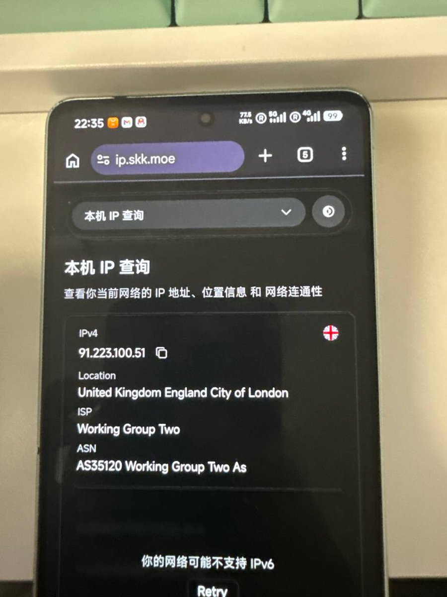

Holafly推出Always On计划，任意购买一张新的eSIM（最低3.9刀），即可在主套餐结束之后自动启用这个计划，每个月赠送1G流量，连续赠送12个月。
China的价格为48.9元每天，切USD后是3.9刀。虽然可用地区没有写CN，但卡友实测可漫游使用，就是信令限速38Mbps。
当做应急卡倒也不是那么够用，有点像支付宝和cmlink联名的那个悠哟哟（yoyo）全球漫游一卡通，只有1GB高速流量。
去年免流就是利用套餐到期后仍可访问谷歌、苹果和Holafly官网所上网的，尽管不去免流也可以访问YouTube看直播、去App Store下个原神，用一阵子就失去信号。
要想防止失联，建议是考虑使用Roamless、Banana Travel SIM等长期eSIM服务。
China的价格为48.9元每天，切USD后是3.9刀。虽然可用地区没有写CN，但卡友实测可漫游使用，就是信令限速38Mbps。
当做应急卡倒也不是那么够用，有点像支付宝和cmlink联名的那个悠哟哟（yoyo）全球漫游一卡通，只有1GB高速流量。
去年免流就是利用套餐到期后仍可访问谷歌、苹果和Holafly官网所上网的，尽管不去免流也可以访问YouTube看直播、去App Store下个原神，用一阵子就失去信号。
要想防止失联，建议是考虑使用Roamless、Banana Travel SIM等长期eSIM服务。



